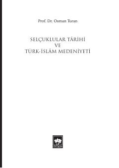

STSaljuqiylar tarixi va Turk-Islom madaniyatini qamrab olgan fundamental ilmiy asar.
Bu kitob Prof. Dr. Osman Turan tomonidan yozilgan bo'lib, Saljuqiylar tarixini, ularning kelib chiqishini, imperiyaning tashkil topishi va inqirozini batafsil yoritadi. Asarda Saljuqiylar davrida Turk-Islom madaniyatining rivojlanishi, me'morchilik, musiqa va boshqa sohalardagi yutuqlar ham ko'rib chiqiladi. Kitobning so'nggi qismida Mo'g'ul istilosi va Turk-Islom sivilizatsiyasining tanazzulga uchrash sabablari tahlil qilinadi.